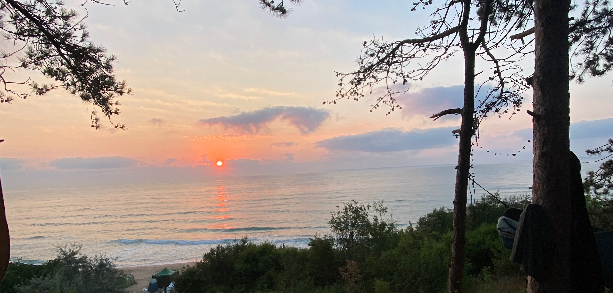

---
---
<!DOCTYPE html>
<html lang="bg">
<head>
    <meta charset="UTF-8">
    <meta name="viewport" content="width=device-width, initial-scale=1.0">
    <title>Карадере ни събира | Банер Събитие</title>

    <!-- Tailwind CSS CDN -->
    {% include tailwind-config.html %}

    <!-- FontAwesome за икони -->
    <link rel="stylesheet" href="https://cdnjs.cloudflare.com/ajax/libs/font-awesome/6.4.0/css/all.min.css">
    <!-- Брандова икона -->
    <link rel="icon" type="image/svg+xml" href="../favicon.svg">
    <!-- Custom style за специфични фонове/шрифтове -->
    <link rel="stylesheet" href="../css/style.css">
</head>
<body class="bg-slate-950 text-slate-100 antialiased min-h-screen flex items-center justify-center p-4">

<!-- Банер контейнер (Аспект 1200x630) -->
<div class="relative w-full max-w-5xl aspect-[1200/630] rounded-3xl overflow-hidden border border-slate-800 shadow-2xl flex flex-col justify-between p-6 sm:p-10 bg-slate-900">

    <!-- Фонов образ с акцент върху изгрева -->
    

    <!-- Градиенти САМО горе и долу, за да остане средата с изгрева светла и прозрачна -->
    <div class="absolute inset-0 bg-gradient-to-b from-slate-950/80 via-transparent to-slate-950/90 pointer-events-none"></div>

    <!-- Горен блок: Статус и Вход Свободен -->
    <div class="relative z-10 flex items-center justify-between gap-4">
        <div class="inline-flex items-center gap-2 px-3.5 py-1.5 rounded-full bg-slate-950/60 border border-teal-500/40 text-teal-400 text-xs sm:text-sm font-mono uppercase tracking-wider backdrop-blur-md shadow-lg">
            <i class="fa-solid fa-tree-city"></i> Пловдив за Карадере
        </div>

        <div class="inline-flex items-center gap-2 px-4 py-1.5 rounded-full bg-amber-500/20 border border-amber-500/60 text-amber-300 text-xs sm:text-sm font-bold uppercase tracking-wider backdrop-blur-md shadow-lg shadow-amber-500/10">
            <i class="fa-solid fa-ticket"></i> Вход свободен
        </div>
    </div>

    <!-- Централен блок: Заглавие & Кога/Къде -->
    <div class="relative z-10 space-y-3 my-auto">
        <h1 class="text-3xl sm:text-5xl lg:text-6xl font-black text-white tracking-tight drop-shadow-[0_4px_12px_rgba(0,0,0,0.8)]">
            Карадере ни събира
        </h1>

        <div class="inline-flex flex-wrap items-center gap-x-6 gap-y-2 px-4 py-2 rounded-xl bg-slate-950/60 border border-slate-800/80 backdrop-blur-md text-slate-100 text-sm sm:text-base font-semibold shadow-lg">
                <span class="flex items-center gap-2 text-teal-400">
                    <i class="fa-solid fa-calendar-day"></i> 31 Октомври 2026 г. 14:00 часа
                </span>
                <span class="flex items-center gap-2 text-teal-400">
                    <i class="fa-solid fa-location-dot"></i> Пловдив - Младежки хълм
                </span>
        </div>
    </div>

    <!-- Долен блок: Участници, After Party & Домейн -->
    <div class="relative z-10 space-y-4 pt-2">

        <!-- Списък с участници на полупрозрачен подложка -->
        <div>
            <p class="text-xs font-mono uppercase text-slate-300 tracking-wider mb-2 drop-shadow">
                <i class="fa-solid fa-music text-amber-400 mr-1.5"></i> С участието на:
            </p>

            <div class="flex flex-wrap gap-2 text-xs sm:text-sm">
    <span class="px-3 py-1.5 rounded-xl bg-slate-950/75 border border-slate-700/80 backdrop-blur-md text-white font-medium shadow">
        Оркестър на тясно
    </span>
                <span class="px-3 py-1.5 rounded-xl bg-slate-950/75 border border-slate-700/80 backdrop-blur-md text-white font-medium shadow">
        Чуваме се
    </span>
                <span class="px-3 py-1.5 rounded-xl bg-slate-950/75 border border-slate-700/80 backdrop-blur-md text-white font-medium shadow">
        Aiya Rose
    </span>
                <span class="px-3 py-1.5 rounded-xl bg-slate-950/75 border border-slate-700/80 backdrop-blur-md text-white font-medium shadow">
        Ян от „Нещо цветно“
    </span>
                <span class="px-3 py-1.5 rounded-xl bg-slate-950/75 border border-slate-700/80 backdrop-blur-md text-white font-medium shadow">
        Бас Народен
    </span>
                <span class="px-3 py-1.5 rounded-xl bg-slate-950/75 border border-slate-700/80 backdrop-blur-md text-slate-300 font-medium shadow">
        Още - ТБС
    </span>
            </div>

        </div>

        <!-- Долна лента: After Party & Домейн -->
        <div class="pt-3 border-t border-slate-800/80 flex flex-col sm:flex-row items-start sm:items-center justify-between gap-3 text-xs sm:text-sm">
            <div class="flex items-center gap-2.5 text-amber-300 font-semibold bg-slate-950/80 px-3.5 py-1.5 rounded-xl border border-amber-500/30 backdrop-blur-md shadow">
                <i class="fa-solid fa-martini-glass-citrus text-amber-400 animate-pulse"></i>
                <span>After Party: <strong class="text-white">Club Al Capone</strong></span>
            </div>

            <div class="font-mono text-slate-300 flex items-center gap-2 bg-slate-950/60 px-3 py-1 rounded-lg backdrop-blur-md">
                <i class="fa-solid fa-globe text-teal-400"></i>
                <span class="text-white font-bold">karadere.one</span>
            </div>
        </div>

    </div>

</div>

</body>
</html>